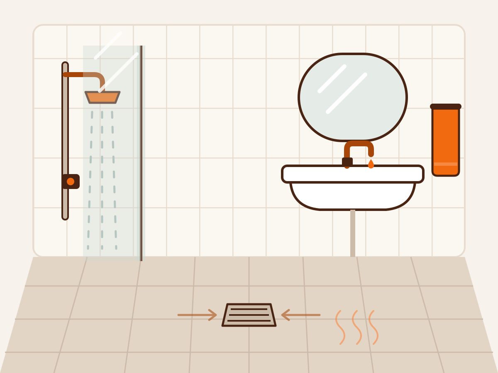
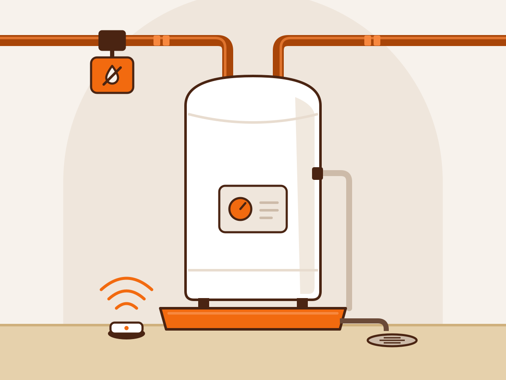
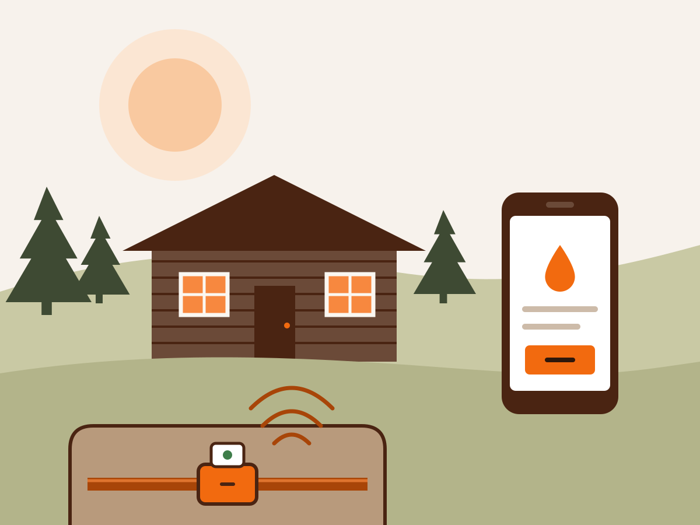

Here is a selection of jobs we have done. Want something similar done at your place? Send a request with a photo, and you get the price before we start.

Projects
Jobs Kobber og Kran has done in Aurskog-Høland and Indre Østfold: water heaters, bathrooms, cabins, heating and more, with photos.


ExampleNew water heater in a basement
The old 200-litre heater was 22 years old and had started to drip. We replaced it with a new one in the same place, with a new safety valve and mixing valve, and drained the old one. Done in one morning, with the paperwork sent by email afterwards.


ExampleWater shut-off at a cabin
A motorised valve on the main line, with sensors under the kitchen sink and by the water heater. The owner can now close the water from their phone when they leave.

Plumbing for a new bathroom
New supply and waste pipes, floor drain, wall-hung toilet and shower in a bathroom from the 1970s. We coordinated with the tiler and electrician, and the owner got the documentation for the wet room.